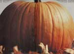
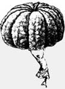
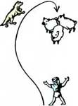

It takes patience to teach a young sheep dog its job.
I live on a small, hilltop farmstead in Ohio and have kept sheep ever since I was three years old (I'm 13 now). I've built my flock up slowly over the years and now have one ram and 14 ewes, which produce about 16 to 20 lambs a year.
Two years ago I realized how much time I spent chasing my sheep. I was running them off muddy pastures in springtime, cornering ewes to check their feet in the heat of summer, trying to catch quick little lambs that squeezed through the barn door in January and constantly trying to get sheep into the barn to trim their hoofs or give them injections.I needed help.
I tried using Zak, our Labrador retriever, as a sheep dog-but he chased the lambs away from me instead of to me. An Australian shepherd puppy I located at a nearby farm didn't do much better. Then a local sheep dog trainer, Pat Welsh, found a registered border collie puppy for me to work with. I named her Nell. As Pat pointed out, the border collie has the instinct (bred into it for generations) to bring stock to its master.
I've had good results with Nell, but it took a lot of time and careful training. I'll tell you the story of how I trained her, and I'll include portions of my day-to-day journal as I go along.
Feb. 2:I got Nell today for my birthday! She's a four-month-old border collie. I am being quiet and calm around her because she is a little scared.
During the first few weeks I played with Nell to get her used to me and took her on walks with the lead. (The lead is a 50-foot nylon cord. I always kept Nell on the lead or on a six-foot leash when she was not in her kennel. Otherwise, her strong herding instincts would cause her to race for our poultry yard!)
When she was used to the lead, I taught her to come when I called. I said, "Nell, come," in a friendly tone of voice and snapped my fingers and clapped my hands to encourage her. If she wouldn't come, I'd give a gentle pull on the lead, and then she would. I praised her and gave her a treat. Soon she would come with only a "Nell, come"-without either the pull on the lead or the treat.
After two weeks, Nell was ready to start learning the basic commands
First, I taught her to heel (to walk close beside me). To do this, I put her on the leash, said, "Nell, heel" and quickly pulled her to my left side. Then I would start to walk. If she got ahead of me or behind me, I would give a couple of quick jerks on the leash. I stopped frequently and pushed Nell into a sitting position.
The training sessions were only 10 minutes at first and slowly got longer as her attention span grew. At the end of every training session, I said, "That'll do, Nell." Nowadays, when she's working stock, I can say that and she will stop working and come right to me.
Feb. 24:Nell knows heel well enough now. I will teach her to lie down next.
Feb. 26:I made Nell lie down only two or three times each session today because it was her first time and she gets nervous being forced to the ground.
To teach her to lie down, I put Nell on the leash (not the lead) and ran all but about 18 inches of it under the middle of my shoe. Then I gave the command and pulled up on the long end of the leash to force Nell's head down. I pushed the rest of her body down with my free hand. After she was down for a few seconds, I let her up, said, "Move up" and walked a few feet with her beside me.
When she knew this well, I put her on the lead, told her to lie down and, when she was down, said, "Stay." She tried to get up and I said "Stay" again and pushed her back down. At first I had to repeat the command a lot. Soon I could walk all around her, holding onto the lead, without her getting up. A few days later I was able to let go of the lead and walk all around the yard. If she got up at any time, I would shake her by the scruff, say "No" and push her back down to the ground. After a few days' training sessions, I started going out of sight for a few seconds. Soon I could leave and expect her to stay lying down.
My next challenge was to teach Nell to lie down at a distance and move up toward me. I said "Lie down, stay" and then walked to the end of the lead, said "Move up" and pulled her a few feet toward me and then downed her again with "Lie down, stay." I worked on this for about a week till Nell knew it well.
When Nell could do all these basic commands, it was time to take her to the duck pen. Ducks are much less aggressive and skittish than sheep, so most trainers start working young dogs on ducks.
Apr. 28:Today I reviewed all of the basics with Nell. I took her to the duck pen to see how she would do. She did well until the end of the training session, when I couldn't catch her because she wanted to keep the ducks lined up with me! After trying to get her to come to me for some time, I gave up and walked away. Sure enough, Nell came away, too - she had nobody to keep the ducks lined up with!
May 3:I am working with Nell on the basics again - she isn't quite ready for the duck pen yet.
May 29:I tried Nell with the sheep, but they wouldn't run because she wouldn't walk toward them. She hasn't gained courage enough to work sheep yet.
My duck pen is a round, woven-wire enclosure, three feet high and 30 feet in diameter. In this I put four ducks whose wing feathers were trimmed so they couldn't fly while I was using them for training (the feathers do grow back). First I had Nell heel to the duck pen, where I put the long lead on her. Then we walked around the outside of the pen, and I made her lie down a lot. (It takes some work to get a dog to lie down consistently around stock.)
It is the border collie's instinct to keep stock lined up with you (to keep them in a line between you and it). I used that instinct to teach Nell two important commands: way to me (move right) and come by (left). I got in the pen with Nell lying down on the outside and said, "Way to me, Nell." I moved the ducks to the dog's right and Nell moved right to keep the ducks lined up with me (see Fig. 1). I moved the ducks to the left and told Nell, "Come by," and Nell moved to the left. I used a 12-foot bamboo fishing pole to move the ducks.
All of this training took time.
July 31:I worked Nell at the duck pen with me on the inside and Nell on the outside. She was excited, and it was hard to get her to lie down on command. She was doing pretty well toward the end of our session.
Aug. 1:I put Nell inside the pen with me and the ducks today. I had to practice having her lie down before I did anything else in the pen-she was so excited. She did well at keeping backoffthe ducks.
After I got Nell used to being in the pen with the ducks, the ducks and I moved to one side of the pen, and I sent Nell right and left by saying "Way to me" and "Come by." I kept her away from the ducks by running my fishing pole along her toes - she didn't like that.
When Nell was under control in the pen, I had her follow me around the pasture wearing the ducks to me. (Wearing is when the dog holds the stock close to you while you walk around.) I downed Nell on one side of the ducks while I walked to the other. I then walked backward a few feet and gave Nell the move up command. If she began to crowd the ducks too much, I downed her and told her, "Take time," and then repeated, "Move up." Soon she learned to slow down whenever I said, "Take time."
Aug. 15:I am very excited about starting work on Nell's outrun tomorrow-it is such an important part of her training!
The outrun is the course the dog takes to get behind the sheep. The correct pattern is like half a pear (Fig. 2). To teach Nell this, I chased the ducks into the pasture. I downed her about 100 feet from them and got up close to them myself. Then I gave her a right or left command to get her to circle around the ducks. I kept her well away from the flock by forcing her out with my fishing pole. As soon as Nell was behind the ducks, I downed her, said "Move up" and let her wear the ducks to me as I walked around the pasture.
It took me a long time to teach Nell the outrun. For nearly two months I kept her off the ducks while getting her to circle one way and then the other around them.
Sept.14:It has been two weeks since I've been able to take Nell to the ducks. I discovered two things: Nell is in heat, and the ducks are setting on eggs. Besides, Richard (my dad) wants me to take the duck pen down for some work he wants to do on the pasture. I'm just reviewing the basics with Nell at this time.
Sept. 24:Yesterday, Pat Welsh came over and said I should try Nell with the sheep!
Before Nell's outrun was as wide as I wanted it, I took her to the sheep. I had her under control around the ducks, and she had gained courage enough not to be put off by a sheep butting her. I had Nell wear the sheep to me, starting with a group of three, the same way she had with the ducks. It was harder with the sheep.
Before sending Nell on her outrun, I said, "Look, Nell, look for the sheep." When I was sure she saw them, I sent her around them. It is very exciting to give the command and watch your dog race off in a wide arc. When she got behind them, I downed her for a moment and then told her, "Move up," so she'd bring the sheep to me.
Oct. 22:Pat Welsh came over and said Nell's outrun looks good and that she is ready to learn to drive.
Oct. 23:I started Nell on driving today. She moves very slowly and doesn't like doing it.
Driving (herding the sheep away from you) is not natural for a border collie. Its instinct is to bring the sheep to you. I began by chasing a few gentle, slower-moving sheep out into the pasture. I had Nell move straight toward the sheep in front of me instead of going behind them and holding them up to me. She did not like this and moved stubbornly at first, so I praised her a lot and only worked on it a short time each session.
During driving practice, if Nell would start to go around the sheep to bring them to me, I would down her and then tell her, "Move up." I also had her move right and left while driving the sheep to control where the sheep were going.
After some days of training Nell this way, I could stand in one spot while she drove the sheep away from me. When she had them out a ways, I sent her around them and let her bring them back.
Around this time I started giving Nell jobs to do so she would feel important, jobs like holding the sheep in a corner while I checked their hoofs or trimmed the wool around their eyes. I also taught Nell how to go in behind sheep that are up against a fence and chase them away from it.
To teach Nell to get back out (go off and herd in a stray cluster of sheep), I chased five or so sheep to one end of my pasture and worked another bunch of sheep with her at the other end. After about five minutes of this, I said, "Nell, get back out." Then I took her by the collar and pointed to the other sheep. When she saw them, I sent her around them and had her bring them back to join the other sheep.
Soon I could block her off with my pole from the bunch she was working, say "Get back out" plus the direction command, and she would go after the other bunch. With more work, I only had to say "Get back out" and point to the bunch I wanted her to go after. I think that, in time, I won't even need to point.
I want to teach her to shed the sheep soon - to cut out certain sheep and keep them separate from the others.
Dec. 22:We built an 8' X 8' pen for use in teaching Nell to pen the sheep.
Dec. 23:I tried Nell with the pen for the first time today. She got them in with little trouble.
The most recent thing I've taught Nell is to pen the sheep (to drive them into a pen). I moved five sheep to the pasture and stood at the pen's gate. I used my long pole to keep Nell off the sheep. In penning, the dog must stay on her feet at all times and move quietly so as not to panic the sheep. When the sheep were in the pen, I closed the gate and walked away with her so she felt she had completed a job.
After a few minutes of this, I sent Nell around back on the outside of the pen to lie down while I chased the sheep out. After a week, I penned the sheep and left the gate open and downed Nell in the opening while I went inside. I checked the sheep over, pretending I was giving them shots or examining their feet while Nell held them in.
You can train a working sheep dog yourself if you follow this training process and are patient. Some very good reference books are The Versatile Border Collie by Janet E. Larson, The Farmer's Dog by John Holmes and Anybody Can Do It by Pope Robertson.
The best thing to do is find a trainer in your area and watch him or her work with dogs. It was two years ago when I met Pat Welsh, a wonderful man of about 65 years. His help has been invaluable to me. Whenever I have a question and can't find an answer in my reference books or through my own experimentation, I write and ask Pat. Sure enough, within a few days I receive a warm letter and an answer to my problem. If you cannot locate a trainer in your area, feel free to write me (Maggie Barker, Rt. 3, Millersburg, OH 44654). I'll try to put you on the right track.
Here are some basic training and caretaking rules you should follow.
1. Do keep your dog in a kennel with a good-sized outside run.
2. Don't place that kennel where the dog can see the sheep, or it will get too excited.
3. Do work your dog every day if possible, especially when you start working it around stock. I work Nell two or three times a day unless the pastures are too muddy or I am going somewhere with my family.
4. Do feed your dog the proper amount of good-quality dog food.
5. Do keep the kennel clean.
6. Don't work your dog until it starts losing interest in the session, or else it may go sour and lose interest altogether. This is very important.
7. Never hit or kick your dog with anything, including your hand. To discipline your dog, shake it by the scruff of the neck, look it in the face, and say, "No." Don't scream at it, though.
8. Do praise your dog well when it has done something right. Tell it it's a good dog, stroke it, and fuss over it.
9. Don't say "No" to the dog when just starting to work it with stock. This might discourage it from working.
I have had such good results from my work with Nell and my new pup, Bonnie, that I plan to breed Nell in six months, sell her puppies and also train puppies for other people.
Now that Nell is trained, I do not know how I ever moved my sheep where I wanted them before. I use her nearly every day, and she saves me so much time and energy!
Maggie Barker, home-schooled since early childhood, wrote "From Sheep to Sleep: The Story of a Comforter,"the "Mother's Children" feature in No. 92.
|
 Fig.2 The outrun |
 |
 |